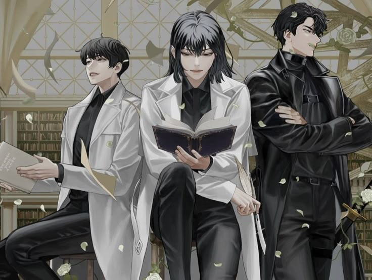
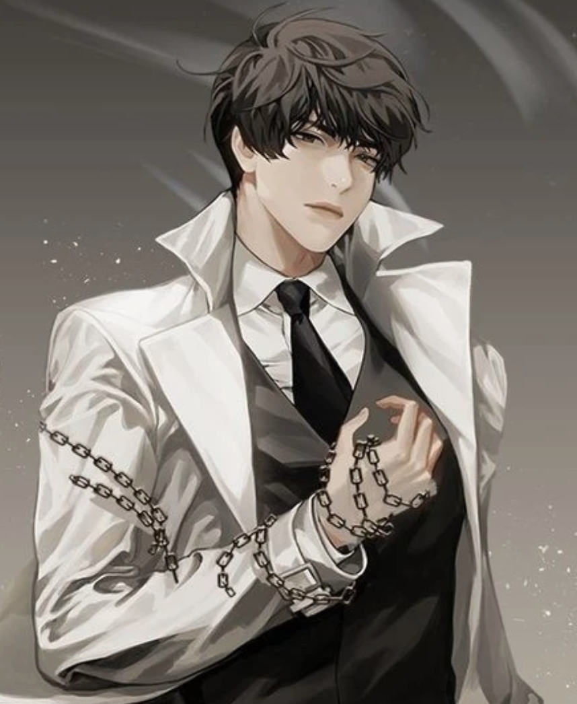
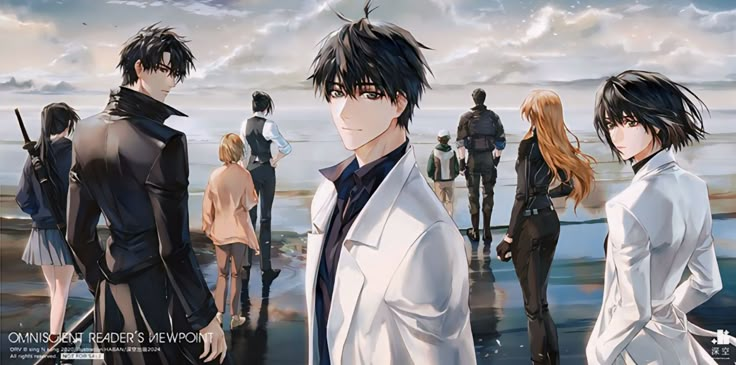

Манхва — это корейские комиксы или графические новеллы, которые охватывают широкий спектр жанров и тем, от приключений и фэнтези до романтики и повседневной жизни.
Данная манхва рассказывает о том, как однажды роман становится реальностью, а главный герой - Ким Док Ча, обладающий знаниями о будущем, пытается выжить и изменить предначертанный всем сюжет. Используя свои знания, он помогает главному герою романа - Ю Джун Хёку, и собирает команду, чтобы пройти смертельные сценарии и изменить судьбу этого мира.
Манхва сочетает в себе элементы выживания, фэнтези, боевых искусств и психологии персонажей, поднимая вопросы судьбы, свободы выбора и значения истории.

«Я знаю то, что сейчас будет». В тот момент, когда он подумал об этом, мир был уже разрушен, и вдруг открылась новая вселенная. Новая жизнь обычного читателя начинается в мире романа... романа, который смог прочесть лишь он.

Ким Док Ча - главный герой манхвы и ранобэ «Точки зрения всеведущего читателя». Он единственный читатель веб-романа «Три способа выжить в разрушенном мире», апокалиптической фантастической истории, написанной tls123 (автор романа в данной истории), который дочитал её до конца.
Ю Джун Хёк - главный герой романа tls123 "Три способа выжить в разрушенном мире". Он — регрессор, человек, который многократно проживал один и тот же апокалиптический мир, умирая и начиная всё заново. В текущем прохождении это его третья жизнь, и он пытается достичь идеального результата, используя опыт из предыдущих жизней.

Хан Су Ён — одна из доверенных союзниц Ким Док Ча и член Компании Ким Док Ча. Она писательница и автор романа «Бесконечный регрессор класса SSSS».

| Персонаж | Роль в истории | Спонсор |
| Ким Намун | Агрессивный психопат | Гневный Меч |
| Ан Чон Сок | Лидер враждебной группы | Король Опустошения |
| Чон Мин Сок | Заместитель главы группы | Демон Войны |
| Имперский принц | Антогонист | Император Звёзд |
| Чхве Со Ён | Одна из выживших | Небесный Будда |
| Ли Тэ Хён | Участник другого лагеря | Непобедимый Воитель |
| Хван Ён Сок | Лидер вражеской фракции | Трёхликий Бог |
| Пак Юн Хё | Женщина, защищающая свою дочь | Богиня материнства |
| Олимпийские Боги | Враждебные констелляции | - |
| Демонические Короли | Сильные антогонисты | - |